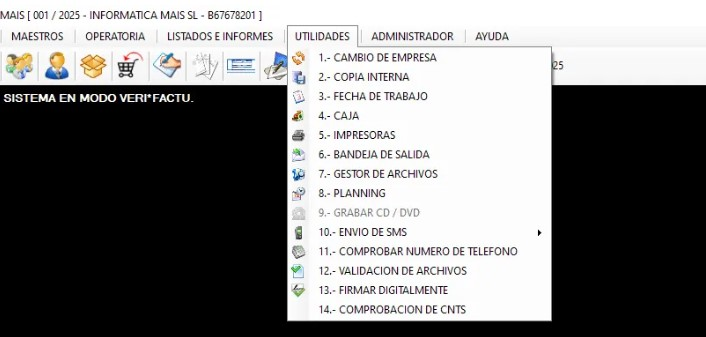

Copia Interna de Seguridad
Dentro del menú Utilidades, encontraremos la opción:
2. Copia interna
Esta función permite realizar copias de seguridad internas del MAIS.
¿Para qué sirve?
- Para proteger todos los datos del sistema.
- Para evitar pérdidas en caso de:
- Fallo del programa
- Corte de electricidad
- Problemas técnicos
- Errores inesperados
⭐ Recomendación importante
Es muy recomendable realizar copias internas de forma periódica.
Así garantizamos que, ante cualquier problema, el MAIS pueda restaurar la información sin pérdidas.
